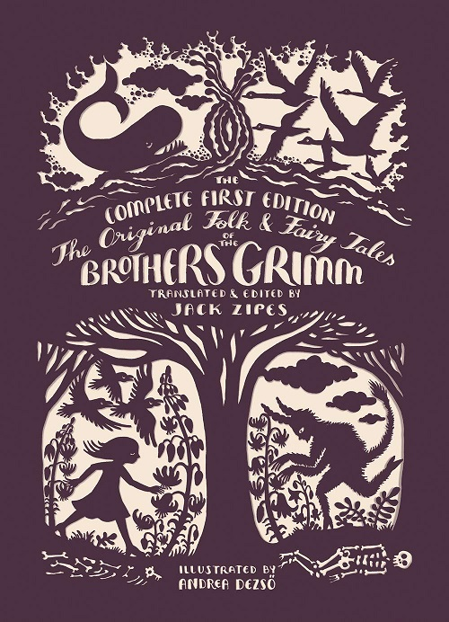

Welcome to our Grimm Brothers project. We are a group of students that want to take a deep dive intot the text and analyze the works to see what we can find. This project is running during Spring 2021. Check back for updates.
The works coverd are:
We are at Penn State Erie, The Behrend College.
Here is a link to the Code View of our textAnalysis-Hub repository. We’ll even link that to the GitHub octokitty image (named "Octocat"):